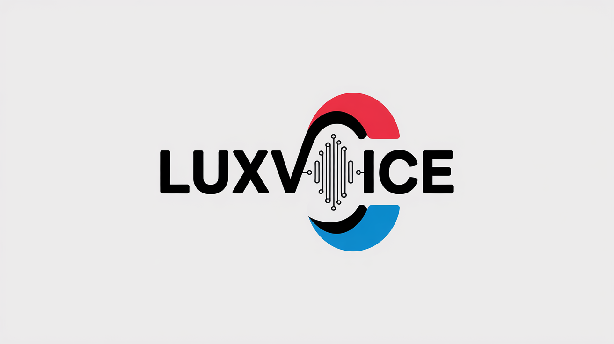
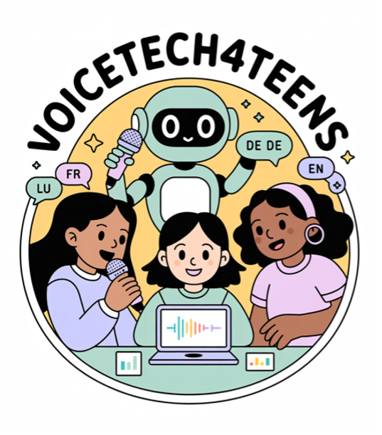

LuxVoice
LuxVoice develops emotionally expressive Text-to-Speech and robust ASR for Luxembourgish, supporting language digitalization, accessibility, and preservation of a low-resource language.
I am a postdoctoral researcher jointly affiliated with RTL Luxembourg and the University of Luxembourg. My work sits at the intersection of speech technology, natural language processing, computer vision, and clinical machine learning. I focus on building practical AI systems for low-resource and underrepresented languages, with a particular emphasis on Luxembourgish.
My research combines phonetics, acoustic analysis, speech processing, and modern deep learning to design robust automatic speech recognition (ASR) and text-to-speech (TTS) systems. In parallel, I develop data-efficient methods for screening neurodegenerative diseases using handwriting and other multimodal signals.
I currently lead the LuxVoice initiative on Luxembourgish speech technology. Within LuxVoice, I am working on:
Beyond speech, I work on clinical AI applications, including:
My research is driven by a simple principle: every language and every community should have access to modern speech and language technology.
This vision translates into four main strands:
Developing methods to build high-quality ASR and TTS systems with limited data. This includes transfer learning, data augmentation, and multilingual modeling strategies that can be realistically deployed for smaller languages like Luxembourgish.
Designing tools and evaluation setups that work across languages. I am interested in how speech patterns, prosody, and phonetic structure transfer across language families, and how this knowledge can improve both speech technology and linguistic analysis.
Using handwriting, drawing behavior, and speech as non-invasive signals for early screening of Alzheimer's disease and other neurodegenerative conditions. My work in this area combines clinical insight with explainable computer vision and signal processing.
Working with local partners and language communities to ensure that models align with real needs and preserve cultural authenticity. Whenever possible, I aim to release tools, datasets, and code under open licenses to support further research and applications.
My academic training is in computational linguistics and cognitive science, with a strong focus on speech technologies and multimodal analysis. Over the past years, I have worked on:
My recent projects include work on Alzheimer's disease screening through drawing analysis, cross-language intelligibility analysis for Parkinson's disease patients, and advanced Luxembourgish ASR and TTS systems in collaboration with RTL and academic partners.
I am actively looking for collaborations related to:
I regularly teach and give invited lectures or workshops on topics such as speech processing, NLP, and responsible use of AI in multilingual settings, including low-resource languages.
If you are interested in joint projects, student supervision, invited talks, or consulting around speech and language technology, feel free to get in touch.
Outside of research, I enjoy nature, mountains, and music. I play the harmonica and kalimba, and I am currently learning Italian and French. These interests keep me close to sound, rhythm, and language in a more personal way, which in turn informs how I think about speech, prosody, and human communication.
My research develops inclusive, practical AI systems for languages and communities that are underserved by existing technology — combining speech processing, multilingual NLP, and clinical AI.
I build ASR and TTS systems for languages with limited data, such as Luxembourgish. My work spans transfer learning, data augmentation, and multilingual modeling — currently leading the LuxVoice and LuxASR initiatives.
I design data-efficient machine learning pipelines for early screening of Alzheimer's disease and Parkinson's disease using handwriting, drawing tasks, and speech — combining computer vision, signal processing, and explainable AI.
I study how NLP models generalize across languages, with a focus on low-resource settings, code-switching, sentiment analysis, and the preservation of linguistic diversity in language models and evaluation benchmarks.
Flagship initiatives in Luxembourgish speech technology, biomedical AI, and STEM outreach — each with a clear research or community impact focus.

LuxVoice develops emotionally expressive Text-to-Speech and robust ASR for Luxembourgish, supporting language digitalization, accessibility, and preservation of a low-resource language.
GLORIA benchmarks LLM generalization in biomedical tasks using Chain-of-Thought prompting for more interpretable NER and diagnosis prediction, developed at the Biomedical Linked Annotation Hackathon 2025 in Tokyo.

VoiceTech4Teens introduces teenagers to speech and voice technologies through hands-on workshops, emphasizing accessible learning, responsible AI, and real-world multilingual speech applications.
For a full list of publications, please refer to my Google Scholar page.
COST Actions: GoodBrother, ENEOLI, UniDive, KGELL
2022 – PresentCercle Cité, Luxembourg City
2025 | Luxembourg
Participated as a panelist discussing Luxembourg's national AI strategy and digital sovereignty in the context of low-resource language technology and responsible AI deployment.
Chambre des Députés, Luxembourg
2024 | Luxembourg
Featured in press coverage of the LuxASR collaboration between the University of Luxembourg and the Chambre des Députés for speech recognition of parliamentary proceedings.
HeadStart AI — Empowering Young Women in Artificial Intelligence
2025 | European Commission
Featured as a woman leader in AI research, sharing the journey from linguistics to speech and neurodegenerative disease research.
Large Language Models for Low-Resourced Languages · January 2026 · Yerevan State University, Armenia
Delivered training on SpeechLLMs in low-resource settings. Topics: tokenization, phoneme alignment, prompt engineering, corpus augmentation for Luxembourgish.
How to Apply Augmentation Techniques on Small Datasets: Neurodegenerative Diseases Datasets · June 2022 · Skopje, North Macedonia
Delivered a training session on data augmentation techniques for small neurodegenerative disease datasets at the 1st GoodBrother Training School.
Luxembourg | Sep 2025 – Present
Leading LuxVoice to build robust Luxembourgish TTS resources and models, with focus on naturalness, speaker quality, and low-resource robustness.
Belval, Luxembourg | Oct 2022 – Present
Developing ASR for Luxembourgish, including dialect-aware recognition and model optimization for low-resource speech settings.
Trento, Italy | Sep 2025 – Oct 2025
Worked on TTS for low-resource languages (Maltese and Luxembourgish), including data augmentation using KNN-VC.
Genova, Italy | Jun 2023 – Jul 2023
Developed self-supervised learning pipelines for medical AI, from dataset curation to pretraining and downstream fine-tuning.
Berlin, Germany | Jan 2020 – Mar 2022
Automated phonetic analyses with PRAAT scripts and studied whispered versus normal speech through acoustic modeling.
University of Luxembourg, FSTM | Jan 2021 – Apr 2025 | Luxembourg
Thesis: ML models for early detection of Alzheimer's disease via handwriting. Nominated for Best Thesis Award.
Supervisors: Prof. Christoph Schommer, Prof. Luis Leiva
University of Potsdam | Apr 2017 – Jan 2021 | Germany
Thesis: Automated Intelligibility and Phonological Analysis in Parkinson's Disease Patients
Awarded DAAD Grant
Double-degree program | Sep 2017 – Mar 2020 | Netherlands & Italy
Thesis: A deep learning approach to spoken proficiency scoring for non-native speakers
Awarded Erasmus Mundus Scholarship
Delivered a training session on SpeechLLMs in low-resource settings at the 2nd UniDive Training School in Yerevan, Armenia. Topics included tokenization, prompt engineering, and corpus augmentation for Luxembourgish.
"Automatic Data Augmentation of CDT, HDT, and PDT Images for Cognitive Screening" accepted for publication in Springer's Lecture Notes in Artificial Intelligence.
Visited the SpeechTEK group at Fondazione Bruno Kessler (FBK), Italy, working on TTS systems for low-resource languages (Maltese, Luxembourgish) with data augmentation via KNN-VC.
Joined as Postdoctoral Researcher jointly affiliated with RTL Luxembourg and the University of Luxembourg, leading the LuxVoice initiative for Luxembourgish Text-to-Speech.
Nominated for the Best Thesis Award for the PhD in Computer Science at the University of Luxembourg.
Received the Best Oral Presentation award for "Ink of Insight: Data Augmentation for Dementia Screening through Deep Learning" at the 8th International Conference on Medical and Health Informatics, Japan.
"Blueprint of Tomorrow: Contrasting Off-Line and On-Line Drawing Tasks for Alzheimer's Disease Screening" published at the International Conference on Intelligent Data Engineering and Automated Learning.
"Predicting Alzheimer's Disease and Mild Cognitive Impairment with Off-Line and On-Line House Drawing Tests" published at the IEEE International Conference on e-Science, Osaka, Japan.
I welcome collaborations in low-resource speech technology, multilingual NLP, and AI for healthcare diagnostics.
Best for: invited talks, collaborative projects, and student supervision related to speech technology and low-resource AI.
Typical response time: 2-5 business days.